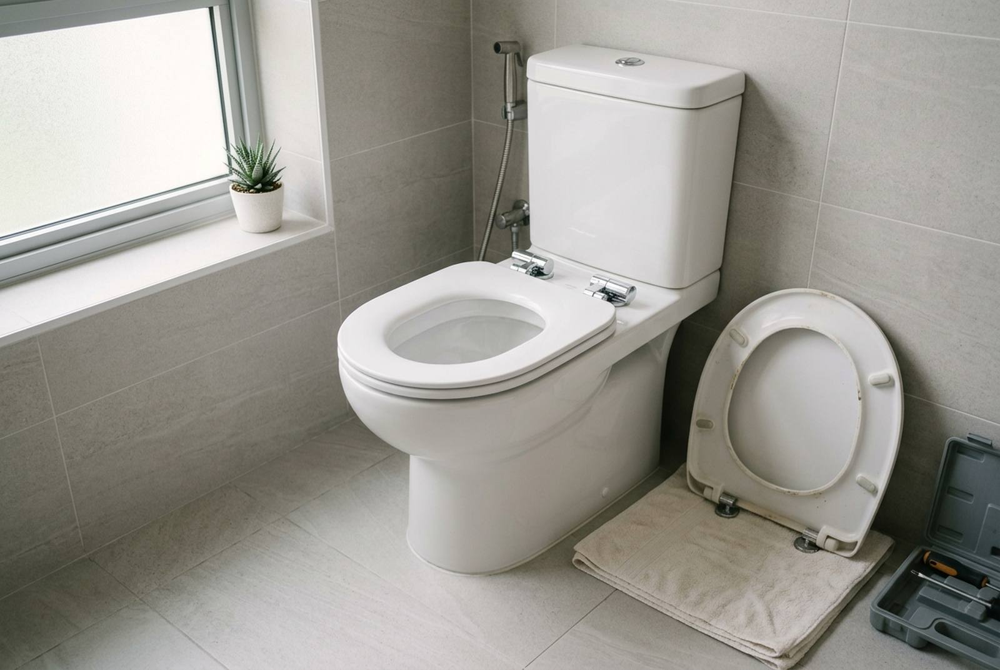

Toilet seat replacement: getting a seat that actually fits

Replacing a toilet seat is one of the smallest jobs in a flat, and the most common way it goes wrong happens in the shop: a seat that does not match the bowl's shape or hinge holes. Measure three things before you buy, check whether your bowl needs top-fix hinges, and the swap itself takes minutes. Seats cost roughly $20 to $250 depending on type and brand, and fitting is a small handyman job, often done alongside other work in the same visit.
When to replace a seat
- Cracked seat or lid. Cracks pinch skin and harbour dirt.
- Loose or wobbling seat that keeps working loose even after tightening; the hinge fixings are usually worn or corroded.
- Broken soft-close: the lid slams, or will not stay up.
- Stained or yellowed plastic that no longer cleans up.
- Before a handover or sale. A new seat is one of the cheapest ways to make a bathroom look cared for.
Measure before you buy
With the old seat lifted off or folded up, measure:
- Length: from the centre of the two hinge holes to the front edge of the bowl rim.
- Width: across the widest part of the rim.
- Hinge hole spacing: centre to centre between the two fixing holes.
Then look at the shape from above: round, elongated (oval), or a squarer designer shape. A seat that is a centimetre too short leaves a ridge of rim exposed at the front; one that is too narrow overhangs. Take a photo of the bowl from above, with the tape measure in shot, when you go to the shop.
Top-fix or bottom-fix?
This is the detail that stops a DIY replacement halfway.
- Bottom-fix seats are tightened with nuts from under the rim. Easy on a standard close-coupled bowl where you can reach the underside.
- Top-fix seats tighten from above, using expanding fixings that grip inside the hole. You need these for back-to-wall, wall-hung and one-piece bowls, where the underside of the holes cannot be reached.
Many modern seats come with both options. Quick-release hinges, which let the seat lift off for cleaning, are worth having.
Which seat to choose
| Type | Indicative seat price (SGD) | Notes |
|---|---|---|
| Basic plastic seat and cover | $20 – $40 | Fine for standard round bowls |
| Soft-close, quick-release | $40 – $100 | The sensible default; no slamming, easy cleaning |
| Brand-specific seat for a designer or one-piece bowl | $80 – $250 | Some bowls only fit the maker's own seat |
| Bidet seat or washlet | Higher | Needs a water connection and often a power point |
If your bowl is a branded one-piece or rimless design, look for the model number on the bowl or the cistern (often on a sticker inside the cistern lid) and buy the seat made for it. Generic seats rarely fit those shapes properly.
A bidet seat is a different job: it needs a T-valve on the water supply and, for electric washlets, a power point near the toilet, which in a bathroom must be installed properly by a licensed electrician. See HDB electrical works.
What replacement costs
The seat is most of the cost. Fitting is a short job: remove the old seat and fixings, clean the hinge area properly (it is usually the dirtiest part of the bowl), fit and align the new seat, and tighten it so it doesn't shift. As a standalone visit it is a small handyman job from about $50 in labour; it costs little extra when it is added to other work.
That is how it usually happens. On a recent job at Woodhaven, a toilet seat cover replacement was done in the same visit as the painting works, and the two were invoiced together as one $530 line, alongside a second $280 line for wall patching and a light fitting. Bundling small jobs like this is cheaper than calling someone out for each one; see handyman services.
When the problem is the bowl, not the seat
Replace the bowl rather than the seat if:
- The bowl itself is cracked, even a hairline crack. It can fail suddenly.
- It rocks on the floor or there is water around the base, which points to a failed seal to the floor outlet.
- It is so stained or scratched that a new seat will still leave the toilet looking old.
On a real RK E&C toilet renovation, installing a toilet bowl cost about $150 in labour, with the bowl itself about $340. See HDB toilet renovation cost for the full breakdown, and leaking taps and pipes if the cistern or supply is leaking too.
Doing it yourself
On a standard bottom-fix bowl, this is a reasonable DIY job: a screwdriver, a spanner or pliers for the nuts, and gloves. The difficulties are corroded nuts that will not turn, top-fix fittings on a back-to-wall bowl that need to expand correctly to hold, and seats that turn out not to fit. If the old fixings are seized, don't force them hard against the ceramic; a cracked bowl turns a $50 job into a new toilet.
Frequently asked questions
How much does it cost to replace a toilet seat in Singapore?
The seat is most of it: roughly $20 to $40 for a basic seat, $40 to $100 for soft-close with quick release, and $80 to $250 for a brand-specific seat for a designer or one-piece bowl. Fitting as a standalone visit is a small handyman job from about $50, and costs little extra when bundled with other work.
How do I know which toilet seat will fit my bowl?
Measure the length from the centre of the hinge holes to the front of the rim, the width at the widest point, and the spacing between the hinge holes, and note the shape: round, elongated or square. For branded one-piece bowls, find the model number and buy the matching seat.
What is the difference between top-fix and bottom-fix toilet seats?
Bottom-fix seats are tightened with nuts from under the rim. Top-fix seats tighten from above with expanding fixings, and are needed for back-to-wall, wall-hung and one-piece bowls where you cannot reach under the holes.
Why does my toilet seat keep coming loose?
Usually worn or corroded hinge fixings, or plastic nuts that have stretched. Replacing the fixings, or the whole seat if the hinges are worn, fixes it. On top-fix seats, the expanding fixings may not have been tightened properly.
Should I replace the seat or the whole toilet bowl?
Replace just the seat if the bowl is sound. Replace the bowl if it is cracked, rocks on the floor, or leaks at the base. Bowl installation was about $150 in labour on a real RK E&C job, plus the cost of the bowl.
Getting it done by RK E&C
RK E&C is a Singapore-registered renovation and handyman company (UEN 202442767D). We can supply the right seat for your bowl or fit one you have bought, and we will check the bowl and its seal to the floor while we are there. Because a seat on its own is a small job, most customers add it to other work in the same visit: a toilet door repair, regrouting and silicone, or a move-out clean.
Send a photo of the bowl from above and of the hinge area through our contact form or WhatsApp, with the bowl's brand if you know it.
Need a new toilet seat fitted?
Send a photo of the bowl from above. We will tell you which seat fits, supply or fit yours, and bundle it with anything else that needs doing.
Seat prices are indicative of the Singapore retail market in 2026. The $530 and $280 lines are from an actual RK E&C invoice at Woodhaven dated 17 September 2026, and the $150 and $340 toilet bowl figures are from a completed RK E&C toilet renovation. None of this is a quotation.